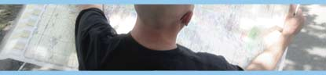
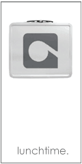

news - issue 7 out now!

lost and nearly forgotten
It can be a shopping list picked up in a parking lot or a photo discovered in a used paperback – everything that appears in the pages of Found magazine has been, well, found. This is what makes it worthwhile – everything you see was never intended for your eyes. The resulting collection is surprisingly intimate.
on life, love and missed connections
There are times when we are overtaken by the sense that someone in close proximity is “the one.” And when this happens, what is the etiquette? Go home, lie in your bed with a bottle of something and ponder the profundity of chance. Why bother looking for love this summer, when you can look for Missed Connections-they're cheaper and less emotionally draining than a real relationship, and they improve upon your existing persuasive writing skills too.
lost and found
This season, clothes designers don’t matter. From Union Station to the Harold Washington Library, sixosix takes you on a Chicago fashion show with the hottest designers around – those nice people that work the lost-and-found booths.
asphalt
Think of that one thing you lost that you’ll never forget. What was it? Your first love? A shoe? Your pride? sixosix preyed upon unsuspecting visitors to Buckingham Fountain to find out just what’s been lost and never reclaimed.
| 6.13.04 |
JULY 1ST AND 2ND!!! TONIGHT AND TOMORROW Double Door · 1572 N. Milwaukee · Chicago, IL · 773.489.3160 sixosix magazine will be giving away year subscriptions to suicidegirls. |
| 6.25.04 |
Third Thursday with sixosix - SEE BLURRY |
|
 |
Join sixosix magazine at our house bar for third thursday's!
Speacial's include: $3.00 Blue Moon Pints and $2 shots of the Marshall! If you have never had one, it's like taking an arctic shower after skinny dipping in lava, but with booze! Moonshine, 1824 W Division St - details |
|
chicago -show your chicago pride



1259 N. Milwaukee Ave Chicago IL 60622